دليل النموذج
كل صفحة، ولماذا وجدت
هذا الدليل يمشي بكم في النموذج: الغرض من كل صفحة، وما يفعله الزائر فيها، وكيف تنتقل العائلة من زيارة أولى إلى بيت تعود إليه كل أسبوع.
- 20صفحة
- 3ألعاب
- 4لغات
- 7أختام
رحلة العائلة
خمس محطات، وكل محطة تسلم إلى التي بعدها.
- 1
الزيارة
الفكرة تفهم من أول شاشة.
الرئيسية - 2
التوقيع
ثلاث خطوات، ووثيقة باسم العائلة.
صفحة التوقيع - 3
بيت العائلة
الوثيقة، وعهد الأسبوع.
افتحوا البيت - 4
القراءة واللعب
كل قصة وكل لعبة تترك ختما.
في جعبتنا - 5
الدعوة
فتطول السلسلة بيتا بعد بيت.
زر الدعوة
الصفحات
اضغطوا على أي صورة لفتح الصفحة نفسها.
الواجهة
أول ما يراه الزائر: من أنتم، ولماذا التوقيع.
-
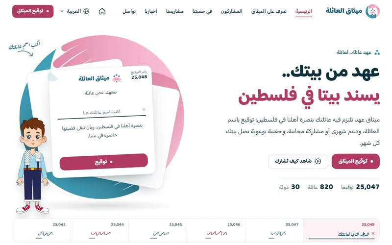
الرئيسيةيعمل كاملا
تقنع الزائر بالتوقيع من أول شاشة، ثم تريه ما سيناله.
- يكتب اسم عائلته فيرى توقيعه على الورقة
- يختار نشاط الليلة للبيت
- يرى كيف تكبر سلسلة الدعوات
-
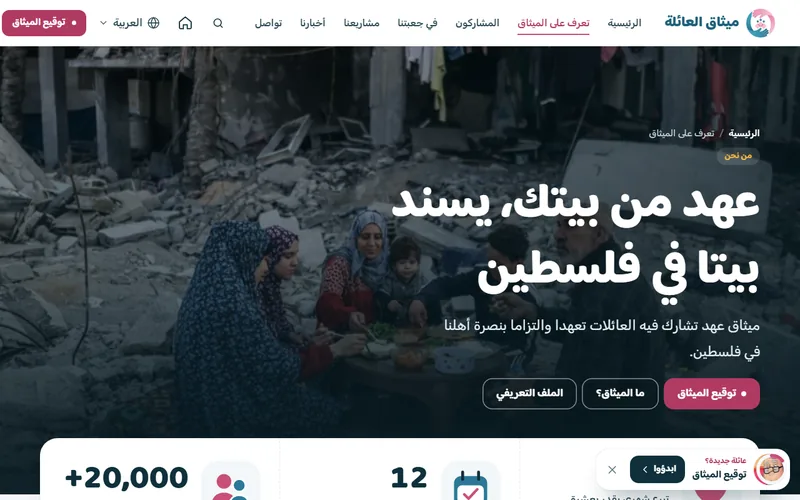
تعرف على الميثاقيعمل كاملا
تجيب عن سؤال واحد: ما هذا الميثاق، ومن وراءه؟
- يقرأ الفكرة في دقيقة
- يصل إلى التوقيع من أي نقطة
-
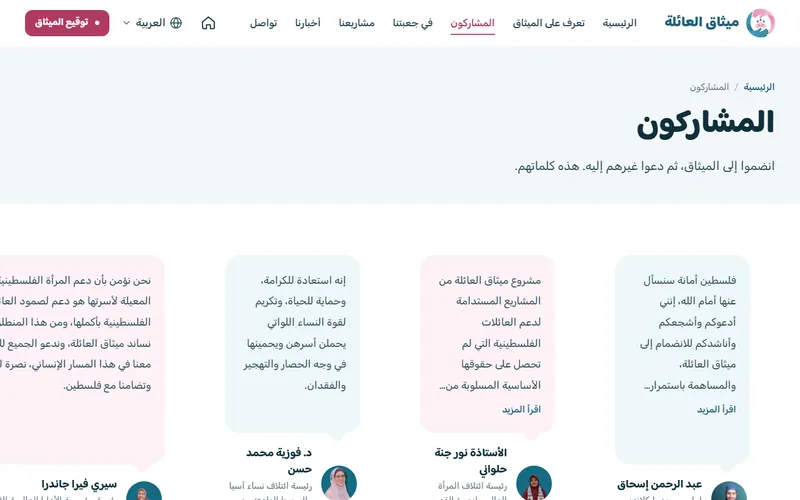
المشاركونيعمل كاملا
ثقة: شخصيات وعائلات سبقته إلى الميثاق.
- يقرأ شهادات المشاركين
- يرى أن غيره سبقه
-
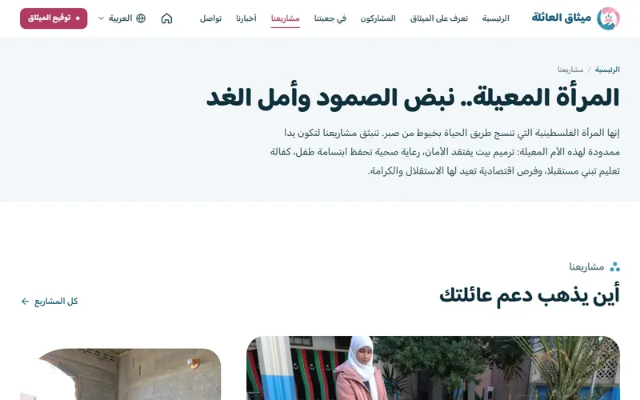
مشاريعنايعمل كاملا
أين يذهب الدعم: مشاريع الميثاق للمرأة المعيلة.
- يتصفح المشاريع
- يفهم أثر مشاركته
-
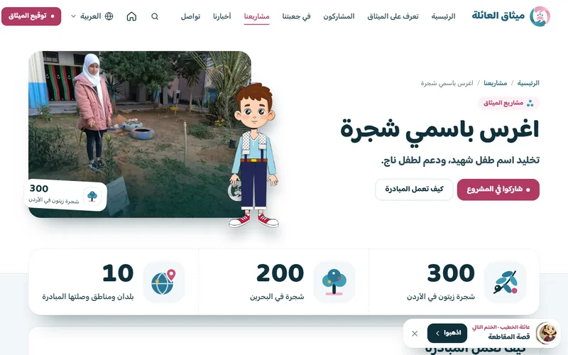
مشروع: اغرس باسمي شجرةيعمل كاملا
مشروع واحد كاملا: كيف يعمل، وأين وصل، وماذا يفعل البيت.
- يفهم المبادرة في ثلاث خطوات
- يرى الأرقام والبلدان المنشورة
- يختار طريقة للمشاركة
-
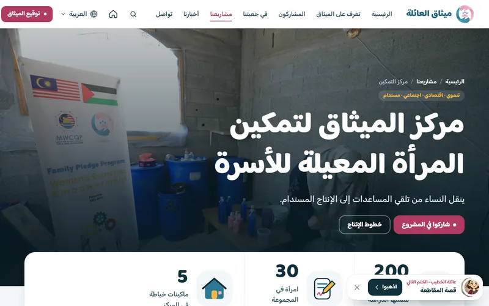
مشروع: مركز التمكينيعمل كاملا
المشروع الثاني كاملا، بأرقام من الميدان وأسبابه الثمانية.
- يرى خطوط الإنتاج الثلاثة
- يقرأ مبررات المشروع
- يختار طريقة للمشاركة
-
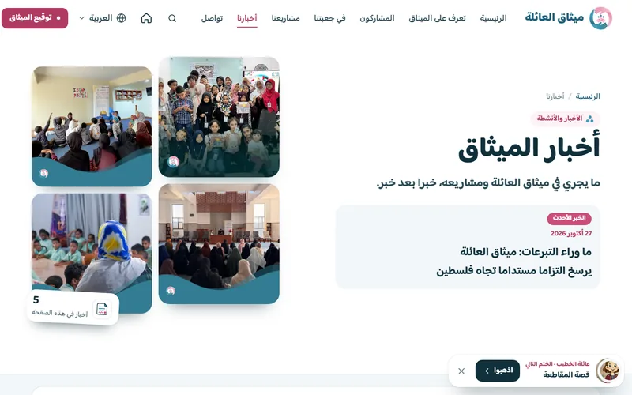
أخبارنايعمل كاملا
الميثاق حي: نشاطات المجموعات في البلدان.
- يقرأ آخر الأخبار
- يتابع نشاط بلده
-
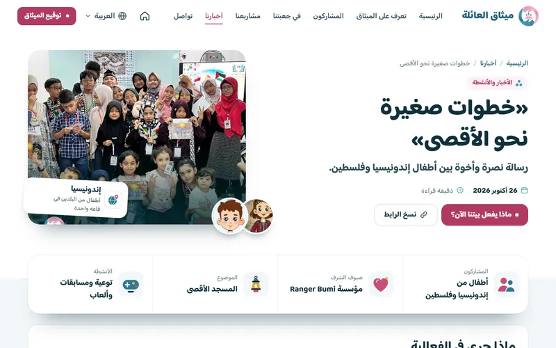
خبر: خطوات صغيرة نحو الأقصىيعمل كاملا
خبر واحد كاملا، ينتهي بما يفعله البيت الآن.
- يقرأ الخبر في دقيقة
- يجد خلاصته في سطور
- ينتقل إلى لعبة أو قصة من الموضوع نفسه
-
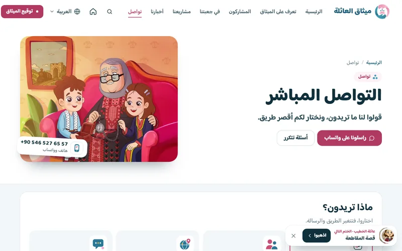
التوقيع
اللحظة التي يصير فيها الزائر عائلة في الميثاق.
-
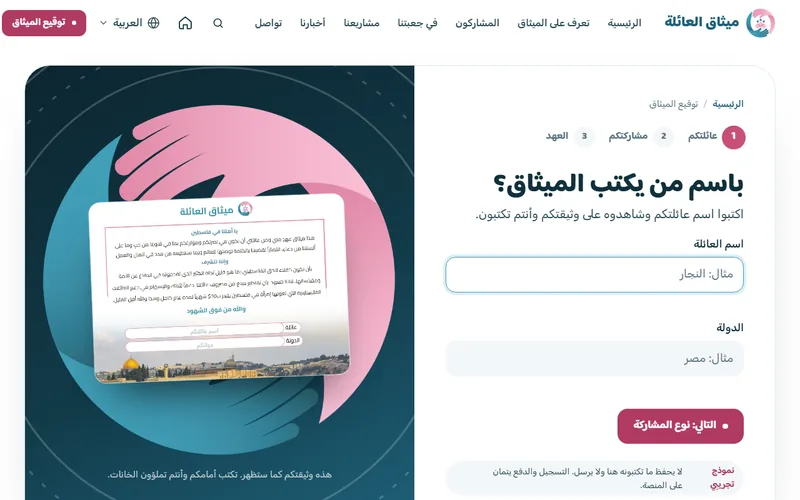
توقيع الميثاقعرض تجريبي
ثلاث خطوات قصيرة تنتهي بوثيقة باسم العائلة.
- يكتب الاسم والدولة فتمتلئ الوثيقة أمامه
- يختار نوع الاشتراك
- يختم الوثيقة وينزلها صورة
بيت العائلة
السبب الذي يعيد العائلة إلى الموقع كل أسبوع.
-
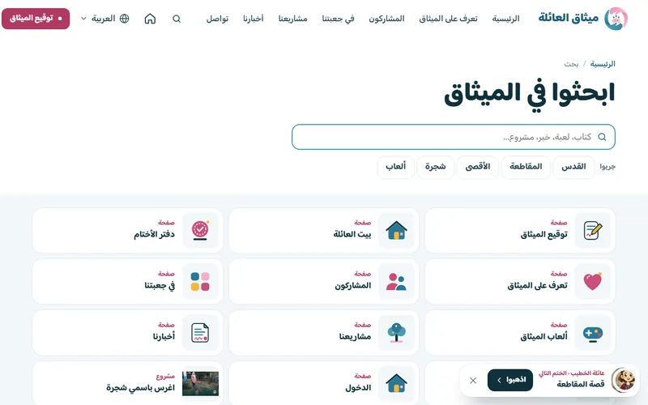
البحثيعمل كاملا
بحث واحد في الصفحات والأخبار والجعبة كلها.
- يكتب كلمة فيرى النتائج فورا
- يصل إلى أي مادة من أي صفحة
-
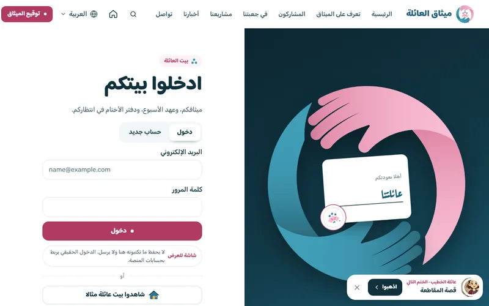
الدخولعرض تجريبي
باب بيت العائلة: دخول أو حساب جديد.
- يدخل أو ينشئ حسابا
- يشاهد بيتا مثالا قبل أن يشارك
-
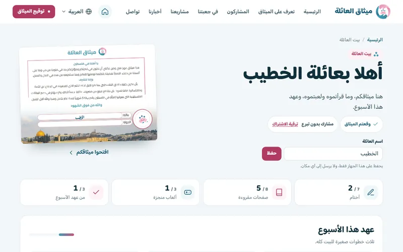
بيت العائلةعرض تجريبي
لوحة العائلة بعد التوقيع: وثيقتها، وتقدمها، وما عليها هذا الأسبوع.
- يرى وثيقته مختومة باسمه
- يتم عهد الأسبوع: اقرؤوا، العبوا، اسألوا
- يجمع الأختام في دفتره
- يكمل القصة من حيث توقف
-
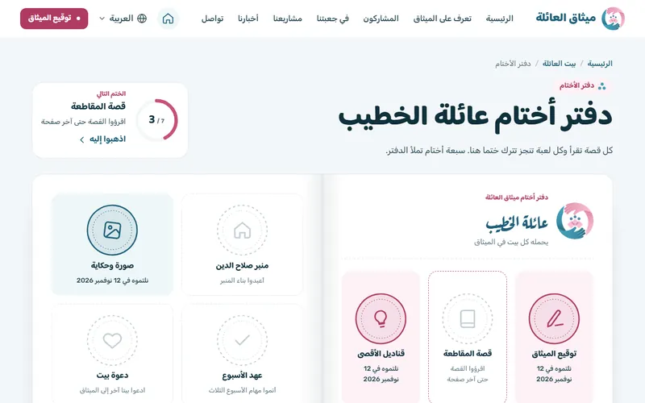
دفتر الأختامعرض تجريبي
دفتر للطفل والبيت: ختم لكل قصة تقرأ وكل لعبة تنجز.
- يرى الختم التالي وطريقه
- يجد تاريخ كل ختم ناله
- يطبع الدفتر ويعلقه
الجعبة
المحتوى الذي يجعل الأطفال أصحاب قضية.
-
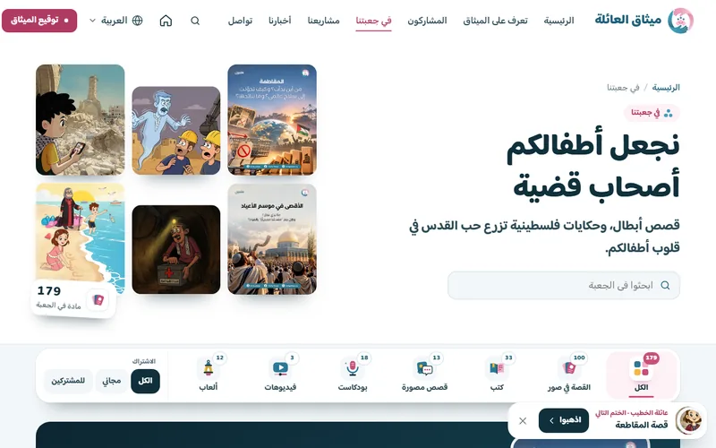
في جعبتنايعمل كاملا
كل المحتوى في مكان واحد، يصفى بالنوع وبالاشتراك.
- يختار النوع: كتب، قصص، ألعاب
- يبحث بالاسم
- يميز المجاني من الخاص بالمشتركين
-
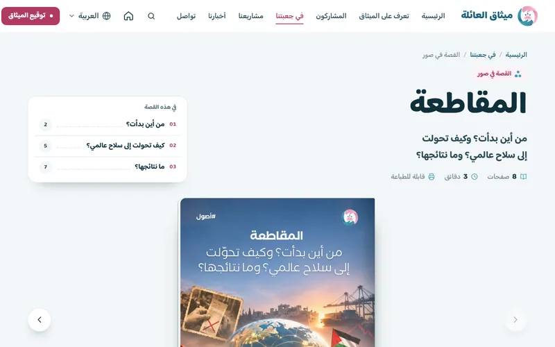
القصة في صوريعمل كاملا
صفحات المنصة كما هي، في كتاب يتقلب.
- يقلب الصفحات كالكتاب
- يطبع أو ينزل PDF
- يقرأ بملء الشاشة مع أولاده
الألعاب
ثلاث ألعاب جديدة مبنية من رسوم المنصة نفسها.
-
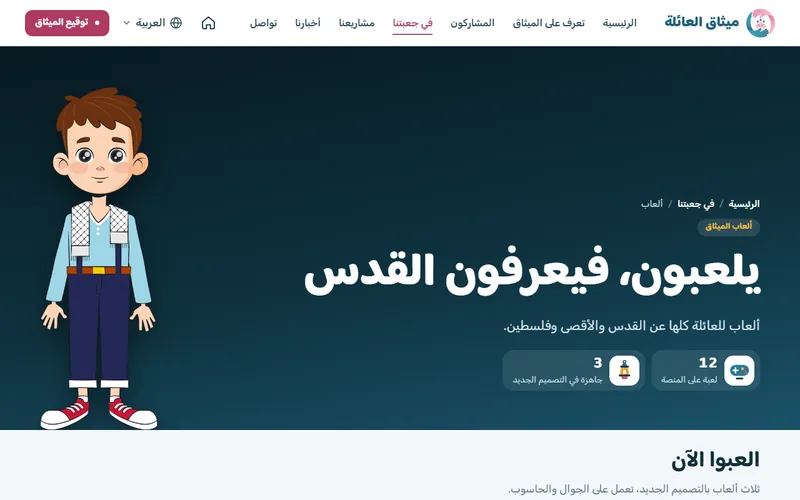
صفحة الألعابيعمل كاملا
كل الألعاب في مكان واحد: الجاهزة أولا، ثم ألعاب المنصة كلها.
- يبدأ لعبة من الثلاث الجاهزة
- يرى الاثنتي عشرة لعبة بأغلفتها
-
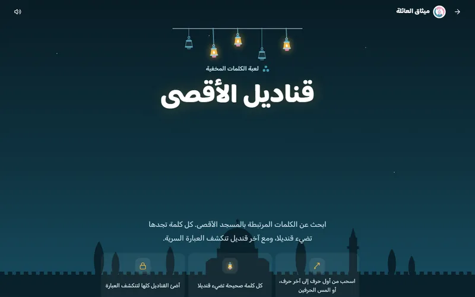
قناديل الأقصىيعمل كاملا
بحث عن الكلمات: كل كلمة تضيء قنديلا.
- ثلاثة مستويات
- تلميحات ووقت ونجوم
-
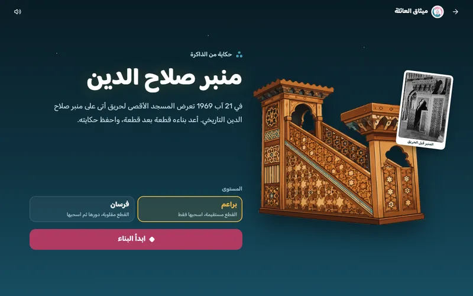
منبر صلاح الدينيعمل كاملا
تركيب صورة المنبر قطعة قطعة، ثم بطاقة تذكارية.
- يدير القطع ويضعها
- ينزل بطاقة باسمه
-
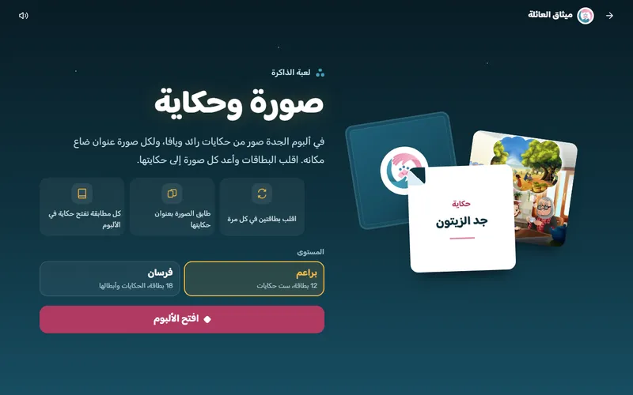
صورة وحكايةيعمل كاملا
لعبة ذاكرة: كل صورة تطابق عنوان حكايتها.
- يقلب البطاقات
- يحفظ أسماء الحكايات
ما الجديد عن المنصة الحالية
- بيت للعائلة فيه تقدمها وعهد الأسبوع ودفتر الأختام. لوحة التحكم الحالية تعرض الوثيقة وأحدث المحتوى فقط.
- كتاب يتقلب بدل عارض الملفات: الصفحات نفسها من غير أي تغيير.
- طباعة وتنزيل وملء الشاشة لكل قصة.
- ثلاث ألعاب جديدة من رسوم المنصة: قناديل الأقصى، منبر صلاح الدين، صورة وحكاية.
- أربع لغات من أي صفحة: العربية والإنجليزية والتركية والإندونيسية.
- هوية واحدة في كل شيء: اليدان، وورقة الميثاق، والختم.
حقيقي من منصتكم
- نصوص الميثاق والوثيقة والشعار.
- صفحات قصة المقاطعة، كما هي على المنصة.
- رسوم الجدة ورائد ويافا وحكاياتهم.
- شهادات المشاركين وأسماء المشاريع والأخبار.
- نوعا الاشتراك: بدون تبرع، وبتبرع.
تجريبي في هذا النموذج
- لا يوجد تسجيل دخول: بيت العائلة يفترض أن الزائر أتم التوقيع.
- التقدم والأختام واسم العائلة تحفظ في متصفح الزائر فقط.
- لا دفع ولا إرسال: نموذج التواصل والاشتراك بتبرع للعرض.
- عهد الأسبوع ثابت على قصة المقاطعة، ولا يتغير كل أسبوع بعد.
- الترجمة التركية والإندونيسية تحتاج مراجعة من أهل اللغة.
الخطوة التالية
- صفحة لكل خبر ولكل مشروع، تنتهي بما يفعله البيت الآن.
- الكتاب المتقلب لباقي الجعبة: القصص المصورة والكتب.
- ربط بيت العائلة بحسابات المنصة الحقيقية.
- عهد جديد كل أسبوع، ومسار بحسب عمر الطفل.
- خريطة الميثاق: البيوت المشاركة بحسب الدولة.
نحتاج منكم
- الأرقام المعتمدة: عدد العائلات والدول والأطفال والتواقيع.
- أي مجموعات «القصة في صور» تدخل أولا.
- هل يبقى تنزيل الملفات مفتوحا، أم للمشتركين فقط؟